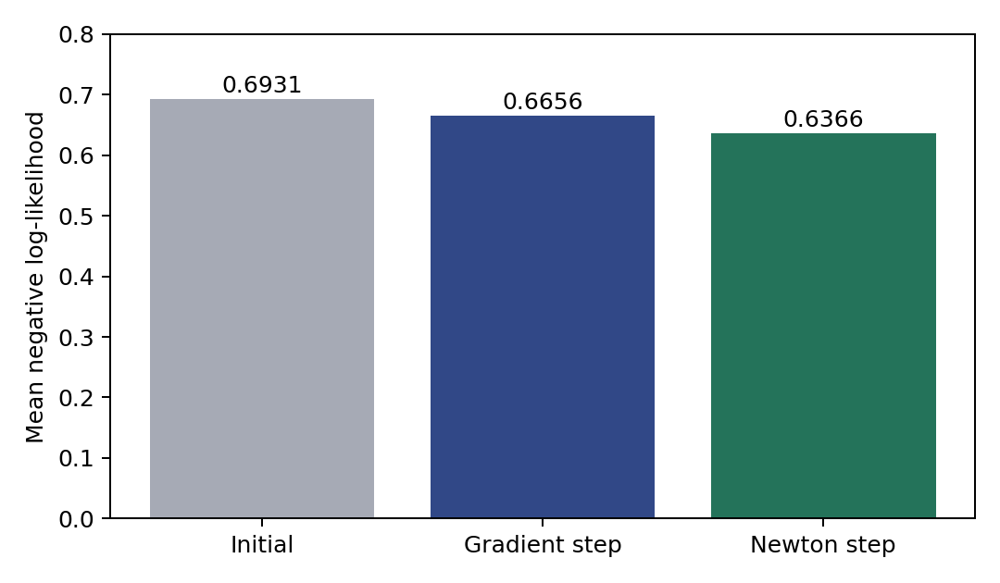

代码 4.3.2-07 · 画出同一起点的一步损失比较
按完整Notebook顺序运行。本章使用教学数组与给定舍入系数，尚不包含4.4；本块可能依赖前面变量。
逐步读代码
bar绘制柱形图，三根柱分别对应初始、梯度下降一步、牛顿一步的实际损失。不是完整训练曲线，也不能由此宣称牛顿法在所有问题上更快。
enumerate同时给出从0开始的位置index与该位置的损失value。text在柱顶标数值；ha=center让文字水平居中。ylim固定纵轴范围且从0开始，避免夸大差异。
图片来自前面实际计算的losses，保存到同一图片目录。这里的图、Notebook输出与PDF引用的是同一个文件。
实际运行输出
Saved comparison of one update from the same initial parameters.
